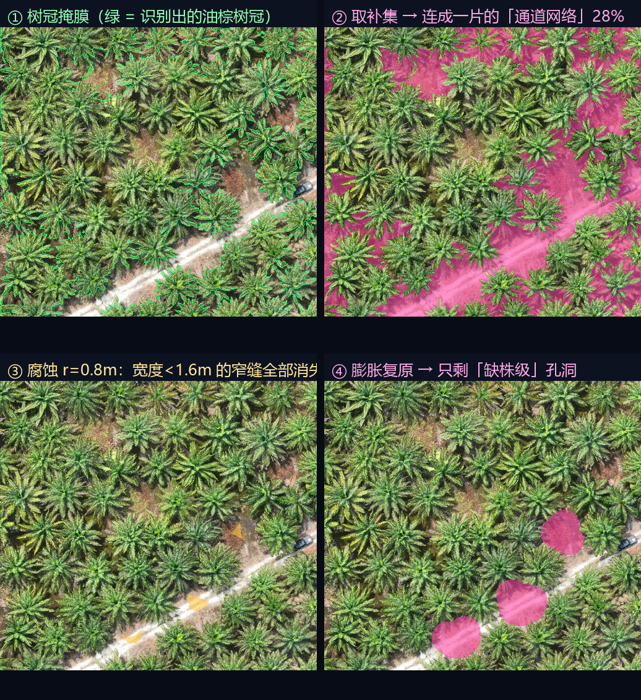

这是本项目最核心的一步算法。读完这份文档，你能向别人解释清楚：问题出在哪、解法为什么成立、参数为什么定这个值。
我们前面的算法已经很好了：能准确认出树冠。但到了「取补集得到空地」这一步，出了个意想不到的问题。
整个项目的核心思路是：空地 = 树冠掩膜的补集。也就是"把树涂黑，剩下的白色就是空地"。
这个思路本身没问题。问题出在结果的结构上。
在一座健康的油棕园里，树是成排种植的，树冠与树冠之间本来就有缝隙——行间的通道、株间的间隔。
这些缝隙彼此连通，像一张网一样铺满整个园区。所以取补集之后，我们得到的不是几百个独立的小块，而是一整片连通的"通道网络"。
为什么这是个问题？
我们要交付给种植队的是「去哪些地方补种」的清单。如果输出只有一个巨大的多边形，比如"这块 269 平方米的区域是空地"——种植队拿着它完全不知道从哪下手，因为这块"空地"其实是由几十条窄缝连起来的一整片。
算法算对了，但结果没法用。 这就是问题所在。
更关键的是：这些窄缝本来就不该报出来
健康林分里树冠之间的缝隙是正常现象，不是"需要补种的空地"。真正需要补种的，是本该有一棵树、但没有的位置——那是树冠大小的一个孔洞（约 40~55 平方米），不是一条 1 米宽的缝。
所以这一步要同时做两件事：① 把连通的网络切断；② 顺手把"正常窄缝"过滤掉。
下面这张图是用你的真实影像跑的，四步依次展示了问题和解法。

注意图中那条斜向的浅色通道（那是园区里的道路/作业道）。在 ② 里它和所有窄缝连成一片，在 ④ 里它被正确地过滤掉了——因为道路不是补种对象。这是这个方法的一个附带好处。
解法叫形态学开运算（Morphological Opening）。它由两个更基础的操作组成：先腐蚀，再膨胀。
想象你拿一个半径为 r 的圆盘，在白色区域内部滚动。凡是圆盘能完全放下的地方，就保留；放不下的地方，就抹掉。
效果就是：所有白色区域从边界向内收缩 r 个像素。细的东西会直接消失，胖的东西只是变瘦。
反过来，让圆盘在白色区域上滚动，圆盘扫过的地方全部涂白。效果是所有白色区域从边界向外扩张 r 个像素。
这是整个方法的精髓。腐蚀阶段彻底消失的窄缝，在膨胀阶段没有任何东西可以扩张——它们已经不存在了。而腐蚀后活下来的"胖块"，膨胀会把它恢复到接近原来的大小。
对应到我们的场景
细颈 = 树冠之间的窄缝（宽度 1~1.4 米）→ 被腐蚀抹掉，膨胀后不恢复 → 从结果里消失
大块 = 缺株形成的孔洞（宽度 7~9 米）→ 腐蚀后仍是"胖块"，膨胀后恢复 → 保留下来
一句话：开运算的半径 r，能抹掉所有宽度小于 2r 的形状。
腐蚀时，白色区域从边界向内收缩 r。所以：
r，剩下的宽度是 W - 2rW - 2r ≤ 0，也就是 W ≤ 2r，这个通道就完全消失W > 2r，通道变窄但还存在，膨胀后会恢复要抹掉宽度小于 W_min 的通道 → 取 r = W_min / 2
代入默认值：W_min = 1.6 m → r = 0.8 m → 换算成像素 = 0.8 / 0.033 ≈ 24 px所以脚本里的参数叫 --min-gap-width-m（最小空地宽度，单位米），而不是直接给像素半径。这样对使用者更直观："宽度不到 1.6 米的缝隙，不算独立空地"。
为什么用「米」而不是「像素」暴露参数？
因为影像的地面分辨率可能变（换一台无人机、换一个飞行高度，可能是 3.3 cm/px 也可能是 5 cm/px）。用米描述的业务规则是稳定的，用像素描述的会随影像变化。 脚本内部会自动用影像的分辨率把米换算成像素。
而且这里有一个容易踩的坑：我们的影像坐标系是 EPSG:4326（经纬度），单位是"度"。脚本不能假设坐标单位是米，而是把窗口边界投影到 UTM 坐标系，算出真实的地面尺寸再除以像素数，这样得到的米/像素是准确的。
不是拍脑袋定的，是从你的实际影像里量出来的。
| 量 | 实测值 | 来源 |
|---|---|---|
| 油棕株行距 | 8.45 米 | 两种独立方法测出同样结果（投影自相关 + 连通域最近邻） |
| 成年油棕冠幅 | 约 7~9 米 | 农业常识 + 影像上树冠直径实测 |
| → 健康树之间的缝隙宽度 | 约 1.4 米 | 8.45 − 7 ≈ 1.45 米 |
| → 缺株形成的孔洞宽度 | 7~9 米 | 等于一株树冠的尺寸 |
所以两类目标在宽度上差了大约 6 倍：
健康株间缝隙
约 1.4 米宽
1.6 米
略高于 1.4，留出安全余量
缺株孔洞
约 7~9 米宽
为什么选 1.6 而不是 1.4？
因为实测的"缝隙宽度"是个平均值，实际会有波动——有些地方冠幅小一点，缝隙就宽一点，可能到 1.5 米。如果阈值正好卡在 1.4，这些地方就会被误判成空地。
取 1.6 米（比 1.4 高约 14%），能吸收掉这部分波动；同时它仍然远小于 7 米，不会误伤真正的缺株孔洞。中间有4 倍以上的安全空间，说明这个阈值很稳，不敏感。
什么时候需要调这个值？
这一步和空地分离是两回事，但都属于"让结果能用"的必要工序。
空地掩膜是栅格（一个个像素格子）。把它转成多边形时，边界会沿着像素格子的边缘走，形成一级一级的锯齿。结果就是：一个多边形的顶点数可能多到离谱。
实测第一次跑出来的结果：
G0001: 面积 408.6 m² → 顶点数 4839一个 400 平方米的多边形有 4839 个顶点，意味着平均每平方米就有 12 个顶点。这种文件：
这是一个经典算法，思路很直观：在一条折线上，如果某个点到"首尾连线"的距离小于容差，就把它删掉。
为什么容差要用「米」而不是「度」？
我们的影像坐标系是 EPSG:4326（度）。如果直接在这个坐标系里简化，容差 0.0001 度——听起来很小，但在马来西亚（北纬 1.19°）大约是 11 米，会把整个多边形简化没了。
所以脚本的做法是：先把多边形投影到 UTM 坐标系（单位是米），在米制下做简化（容差 0.3 米），再投影回原坐标系输出。 这样"0.3 米"就是一个有物理意义的、可解释的容差。
| 指标 | 简化前 | 简化后 | 变化 |
|---|---|---|---|
| 顶点总数 | 17,856 | 544 | 降到 3.0% |
| 空地总面积 | 566.3 m² | 558.2 m² | 只差 1.4% |
| G0001 顶点数 | 4839 | 121 | 降到 2.5% |
顶点数降到 3%，面积只变化 1.4%——说明简化几乎只删掉了无意义的锯齿，没有改变空地的真实形状。这是很理想的压缩比。
参数 --simplify-m 默认 0.3 米。想更精确就调小（比如 0.1），想文件更小就调大（比如 1.0），设 0 则关闭简化。
三个参数决定最终结果，都能在命令行调。
| 参数 | 默认 | 作用 | 调大的后果 | 调小的后果 |
|---|---|---|---|---|
--pct | 40 | 植被指数分位阈值 （把最绿的百分之几判为树冠） |
冠层变小 → 空地变多 → 误报增加 | 冠层变大 → 空地变少 → 漏报增加 |
--min-gap-width-m | 1.6 | 空地最小宽度（米） | 只保留大片空地，单株缺株会被漏掉 | 株间窄缝被当成空地，碎块一大堆 |
--min-area | 30 | 最小空地面积（平方米） | 只报大面积空地 | 噪声小点也报出来 |
--pct。--min-gap-width-m 太小，往上调。参考：本项目当前跑出来的合理结果
在 2048×2048 窗口（67.6 m × 67.6 m）上，用默认参数：
# 默认参数跑一遍
python scripts/detect.py --input D:/WGR/WGR17.tif --size 2048
# 幼树园区：缝隙更窄，调低最小宽度
python scripts/detect.py --input D:/WGR/WGR17.tif --min-gap-width-m 1.0
# 只关心大片空地（不补单株）
python scripts/detect.py --input D:/WGR/WGR17.tif --min-gap-width-m 3.0 --min-area 100
# 对比：关闭空地分离，看看"连成一片"是什么样
python scripts/detect.py --input D:/WGR/WGR17.tif --no-separate